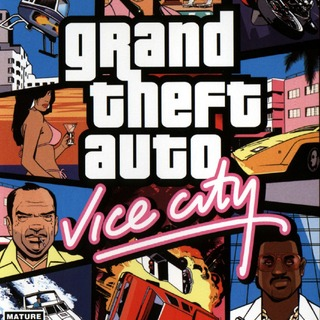
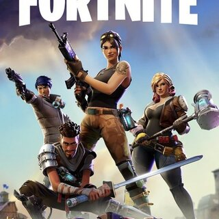
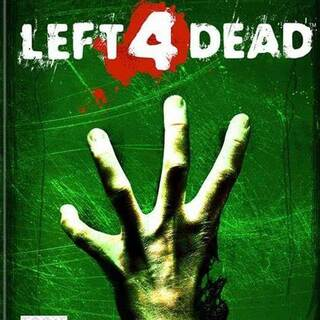

Ir al inicio
Ir al indice
Formulario de VIDEOGAMES
Instruciones : Lee y contesta las preguntas conforme a lo que sabes
Nobre Completo
1. ¿En que año se creo el primer videojuego?
a.1980
b.1952
c.1972
d.1950
2. ¿Cual fue el videojuego mas vendido en todo el mundo?
a. Minecraft.
b. GTA V.
c. Mario Kart 8.
d. Tetris.
3. ¿Cual fue el primer video juego de mexico en llegar a sony,xbox y nintendo?
a. Chavo kart
b. Mulaka
c. Taco Master
d. Heroes del ring
4. ¿En que estado se producen los videojuegos en mexico?
a. Mexicali
b. Monterrey
c. Guadalajara
d. Estado de Mexico
5. ¿Cual de las siguentes imagenes representa un juego de supervivencia?
a.

a.

a.
